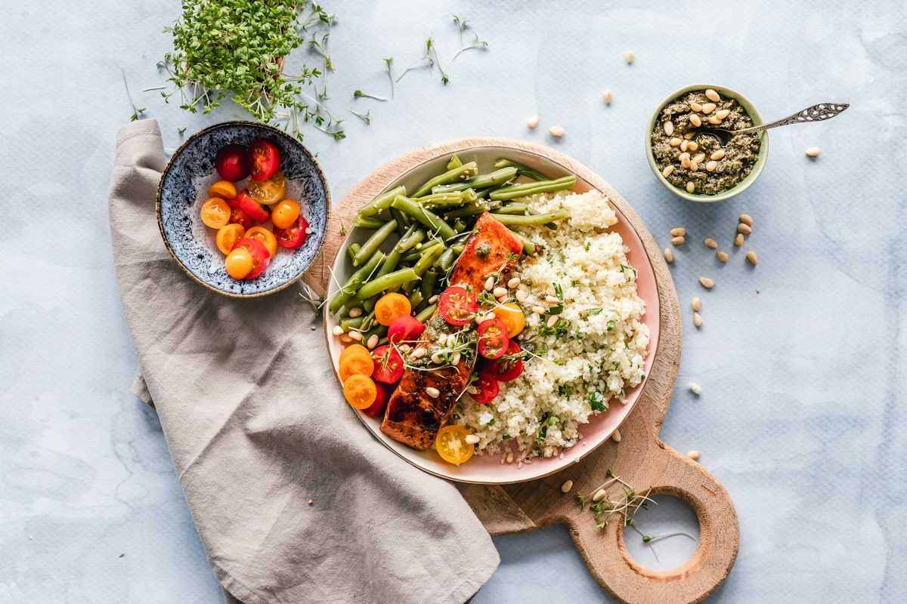

Il tempo detta la carta.
La proposta nasce da ciò che la stagione mette a disposizione. Le ricette cambiano, l’attenzione per la materia prima rimane.
Un ingrediente riconoscibile. Un gesto preciso. Il piacere di ritrovare qualcosa di familiare in un assaggio nuovo.

Non cerchiamo ingredienti perfetti.
Cerchiamo il loro momento perfetto.
La proposta nasce da ciò che la stagione mette a disposizione. Le ricette cambiano, l’attenzione per la materia prima rimane.
Un piatto non è una somma di ingredienti. È un equilibrio fra sapore, consistenza e temperatura, senza aggiunte superflue.
Partiamo dalla memoria della cucina italiana. La rileggiamo con libertà, per trovare qualcosa che sorprenda senza allontanare.

È un mondo di consistenze e possibilità. Nel percorso Radici, verdure, legumi, cereali ed erbe diventano protagonisti dall’inizio alla fine.
Scopri Radici